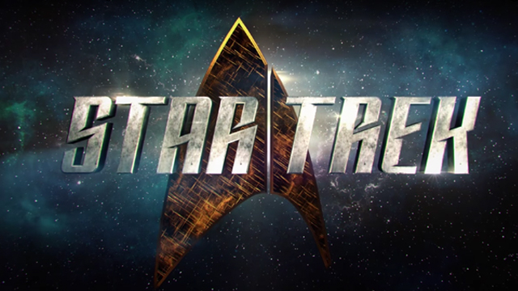

Mercado de Pases 2015

Duis aute irure dolor in reprehenderit in voluptate velit esse cillum dolore eu fugiat nulla pariatur. Excepteur sint occaecat cupidatat non proident.
Duis aute nulla pariatur.
Régimen laboral juvenil

Duis aute irure dolor in reprehenderit in voluptate velit esse cillum dolore eu fugiat nulla pariatur. Excepteur sint occaecat cupidatat non proident, sunt in culpa qui officia deserunt mollit anim id est laborum.
Duis aute nulla pariatur.
Champions League
Duis sunt in culpa qui officia deserunt mollit anim id est laborum.
Duis aute nulla pariatur.
Super Bowl
Duis aute irure dolor in reprehenderit in voluptate velit esse cillum dolore eu fugiat nulla pariatur. Excepteur sint occaecat cupidatat non proident, sunt in culpa qui officia deserunt mollit anim id est laborum.
Duis aute nulla pariatur.
ULTIMAS NOTICIAS
hace 1 hora 12 mins
¡Steve Rogers ya no será el Capitán América en el cine! | VIDEO
Joe y Anthony Russo, directores de Civil War y de la futura Avengers: Infinity War, declararon en entrevista con el Huffington Post que Rogers oficialmente ya no será el Capi en las futuras entregas del Marvel Cinematic Universe.
Joe declaro que “(Rogers) tirando el escudo al final de Civil War es su manera de deshacerse de esa identidad, de admitir que la identidad del Capitán América le implicaba conflicto con sus decisiones personales”.


10
ESPECTÁCULOS
punto
hace 1 hora 12 mins
Roque Benavides respalda proyecto Tía María y espera que Conga se socialice

Zenaida Condori Contreras Arequipa Para el presidente de la compañia de Minas Buenaventura, Roque Benavides, El proyecto Tía María, que promueve Southem Perú, ya debe...
10
AREQUIPA
hace 1 hora 12 mins
Este jueves llega a Perú la tercera cinta de "Star Trek"| FOTOS
La cinta de "Star Trek" ("Viaje a las estrellas"), franquicia de ciencia ficción que obtuvo un reinicio en 2009 gracias al cineasta J.J. Abrams. Uno de los personajes más emblemáticos de esta historia es la teniente Uhura, interpretada por Zoe Saldaña.
En "Stark Trek", Nyota Uhura es oficial de comunicaciones de la nave Enterprise, medio de transporte comandado por James T. Kirk (Chris Pine). Durante toda la saga ella se ha caracterizado por su fortaleza de carácter ante la adversidad.
10
ESPECTÁCULOS
-->icono camara
hace 1 hora 12 mins
Real Madrid: Cristiano Ronaldo fué sancionado con dos partidos y si estará contra el Atlético de Madrid

fue homenajeado por el club al convertirse en el máximo goleador de su historia con 323 goles, igualando en apenas siete temporadas el registro de Raúl González establecido en sus 16 temporadas en el primer equipo. Recibió su cuarta Bota de Oro y se convirtió en el jugador que más veces la logró de la historia, logrando las tres últimas con el conjunto madrileño.
icono facebook icono twitter icono google+
10
Arequipa
hace 1 hora 12 mins
¡Steve Rogers ya no será el Capitán América en el cine! | VIDEO
Joe y Anthony Russo, directores de Civil War y de la futura Avengers: Infinity War, declararon en entrevista con el Huffington Post que Rogers oficialmente ya no será el Capi en las futuras entregas del Marvel Cinematic Universe.
Joe declaro que “(Rogers) tirando el escudo al final de Civil War es su manera de deshacerse de esa identidad, de admitir que la identidad del Capitán América le implicaba conflicto con sus decisiones personales”.
10
ESPECTÁCULOS
punto
AREQUIPA